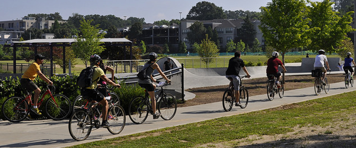

Your stay in Atlanta can be an environmentally friendly one. One great way to see the heart of the city is on foot and bicycle.
The Beltline is a path that runs through the city. You can visit many of the historical intown neighborhoods, and all the hip restaurants, venues, and local shops that the intown neighborhoods have to offer. You can visit brand new Ponce City Market that has many environmentally friendly transportation options like electric vehicle charging stations, a path directly from the Beltline, and many options for parking Bicycles (like a bicycle valet). There are various ways to rent a bicycle if you do not have one with you.

Play the video below for more information on the Beltline